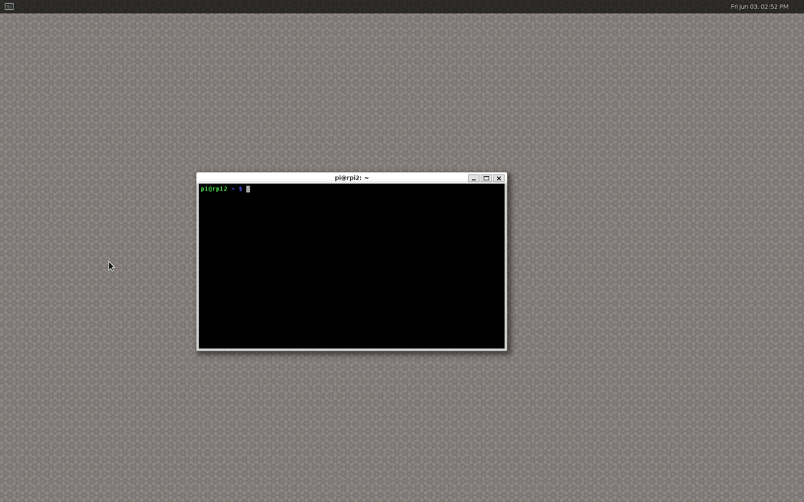

Running Weston on a Raspbian
Fri 03 June 2016
Progress in the VC4 graphics camp and the Wayland camp now enables us to run Weston on top of the drm backend for VC4 platforms. Previously software acceleration using pixman was needed, but this is no longer the case.
Additionally the rpi backend for weston is now being removed since it has been obsoleted by the improved drm layer.
Let's explore running hardware accelerated Weston on the Raspberry Pi.
Building Linux kernel
A comprehensive guide for building a recent Linux kernel for Raspberry Pi boards has been written by the Raspberry Pi foundation and is available here.
As of this writing the guide helps you build a v4.4 kernel which is good enough for our purposes.
Set up alternative install location
These build instructions are based on the Wayland instructions from freedesktop.org, but altered to target VC4 and Raspbian.
You probably don't want to install experimental builds of software among the usual software of your operating system, so let's define a prefix for where to install our builds.
# Change WLD any location you like
export WLD=/opt/local
export LD_LIBRARY_PATH=$WLD/lib
export PKG_CONFIG_PATH=$WLD/lib/pkgconfig/:$WLD/share/pkgconfig/
export PATH=$WLD/bin:$PATH
export ACLOCAL_PATH=$WLD/share/aclocal
export ACLOCAL="aclocal -I $ACLOCAL_PATH"
# Needed by autotools
mkdir -p $WLD/share/aclocal
Installing dependencies
Start by installing the build dependencies of mesa, weston and wayland.
# Enable source packages
sudo sed -e "s/#\sdeb-src/deb-src/g" -i /etc/apt/sources.list
sudo apt update
The above step can alternatively be completed using the GUI of your package manager, by enabling source packages.
# Install build dependencies of mesa
sudo apt-get build-dep mesa
# Install build dependencies of wayland/weston
sudo apt-get install \
libunwind libunwind-dev \
libevdev libevdev-dev \
libwacom libwacom-dev \
libxkbcommon libxkbcommon-dev
Building Mesa
Configure and compile mesa with vc4, wayland and EGL support.
git clone git://anongit.freedesktop.org/mesa/mesa
cd mesa
./autogen.sh --prefix=$WLD --enable-gles2 \
--with-egl-platforms=x11,wayland,drm --enable-gbm --enable-shared-glapi \
--with-gallium-drivers=vc4
make -j4 && make install
Building Weston and dependencies
Weston and Wayland have a number of dependencies that also need to be fetched and built.
Wayland
Weston is a Wayland compositor, so we're going to have to build Wayland.
git clone git://anongit.freedesktop.org/wayland/wayland
cd wayland
./autogen.sh --prefix=$WLD
make -j4 && make install
cd ..
git clone git://anongit.freedesktop.org/wayland/wayland-protocols
cd wayland-protocols
./autogen.sh --prefix=$WLD
make install
cd ..
libinput
libinput is dependency of wasten, handles input devices like keyboards, touchpads and mice.
git clone git://anongit.freedesktop.org/wayland/libinput
cd libinput
./autogen.sh --prefix=$WLD
make -j4 && make install
cd ..
Weston
Finally we've built all of the dependencies of Weston and can now build it.
git clone git://anongit.freedesktop.org/wayland/weston
cd weston
./autogen.sh --prefix=$WLD
make -j4
sudo make install
cd ..
Running Weston
That wasn't so bad, it took a little while, but now we're ready to start Weston.
# Run as root
sudo su
# Set up environment variables to access our newly built binaries
export WLD=/opt/local
export LD_LIBRARY_PATH=$WLD/libs
export PATH=$WLD/bin:$PATH
# Make sure that $DISPLAY is unset.
unset DISPLAY
# And that $XDG_RUNTIME_DIR has been set and created.
export XDG_RUNTIME_DIR=/tmp/xdg-runtime-dir
mkdir "${XDG_RUNTIME_DIR}"
chmod 0700 "${XDG_RUNTIME_DIR}"
# Run weston:
weston
# Run weston through ssh:
# If running weston through ssh, make sure an input device is attached.
weston --tty=3
Try weston applications
Now that we're running weston, let's try some applications.
- weston-terminal
- weston-flower
- weston-gears
- weston-smoke
- weston-image
- weston-view
- weston-resizor
- weston-eventdemo
When you've started all of your favorite applications you can grab a screenshot by pressing Super + s, which will save wayland-screenshot.png in your home directory.